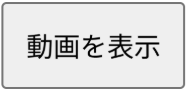
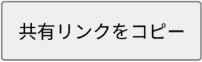
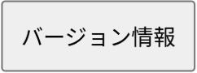
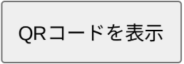

Made by fynk7777
GitHub: https://github.com/fynk7777/GakuTube
これは、学校のパソコンでYouTubeを見れるようにしたものです。
一部、見れない動画などがあったりしますが、ご了承ください。
私の地域では、全タブが再読込されるということが起きることを確認しております。これはこちら側の問題では無いのでご了承ください。
こちらは、html、css、javascriptを使用しての作成となっております。
プライバシーへの侵害及び、データの取得は一切しておりませんのでご安心ください。
以下は全体の画面の画像です
ここに、動画のURLを入力してください。
動画URL入力欄に入力したURLの動画を表示します
※YouTube,TikTokにのみ対応しています。
クリップボードから貼り付けることが出来ます。
※初めて使用する場合は、サイトから許可を求められる可能性があります。
現在表示している動画を共有するリンクをコピーすることが出来ます
現在のページを表示することが出来ます。
GakuTubeのQRコードを表示することが出来ます。
これを利用して、他の人にもこのサイトを共有することが出来ます
YouTubeの動画を見れるように作成
TikTokに対応
「htmlファイルをダウンロード」を削除
「共有」機能を追加
公式サイトで表示機能を追加